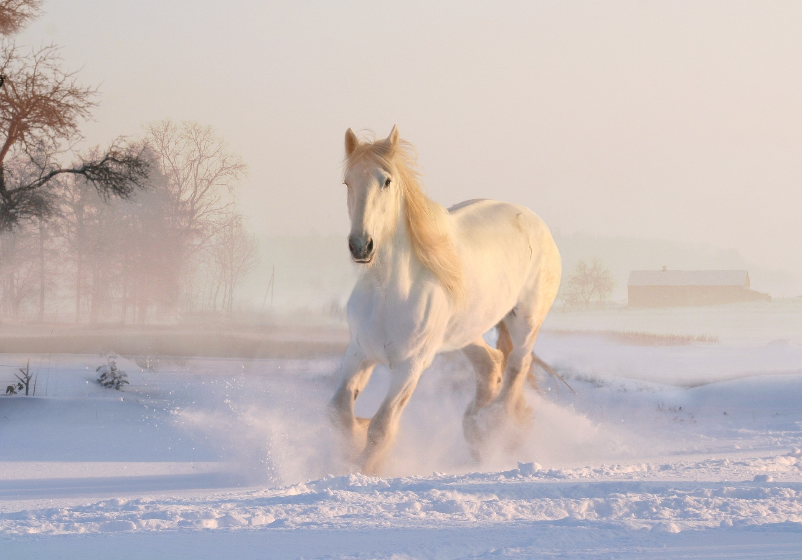

Horses are adapted to run, allowing them to quickly escape predators, and possess an excellent sense of balance and a strong
fight-or-flight response. Related to this need to flee from predators in the wild is an unusual trait: horses are able to sleep both
standing up and lying down, with younger horses tending to sleep significantly more than adults.[4] Female horses, called mares,
carry their young for approximately 11 months and a young horse, called a foal, can stand and run shortly following birth.
Most domesticated horses begin training under a saddle or in a harness between the ages of two and four.
They reach full adult development by age five, and have an average lifespan of between 25 and 30 years. Want to know more?
